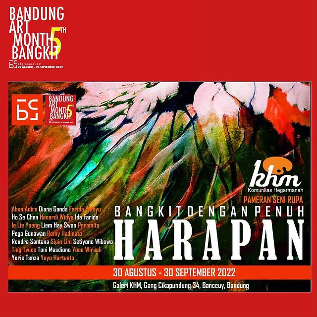
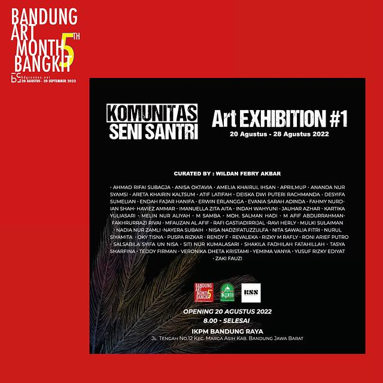

EVENT DAN PAMERAN
Bangkit dengan Penuh Harapan
Pandemi global yang berkepanjangan cukup membuat kita semua frustasi, tapi sebagai seniman -yang konon adalah insan kreatif- kata patah semangat tidak ada dalam kamus kita,sebaliknya,situasi ini mendorong kita untuk menghasilkan karya karya yang dinamis. Merangkai kondisi tersebut *Komunitas Lukis Hegarmanah* menjadi bagian dalam Program *Bandung Art month ke 5* dengan menggelar *Pameran* bertajuk *Bangkit Dengan Penuh HARAPAN*.Pengantar Pameran Toni Masdiono @tmasdiono Pembukaan, Selasa, 30 Agustus ,pkl. 11.00 Wib di Galeri Hegarmanah @galerikhm , Gg. Cikapundung No. 34 Bandung*. Pameran berlangsung : 30 Agustus - 30 September 2022. Pkl. 10.00 - 16.00 Wib. Sabtu & Minggu Libur. Salam Budaya

30 Agustus - 30 September 2022
Gg. Cikapundung No. 34 Bandung

20 Agustus - 28 September 2022
Jln. Tengah no. 12, Kec. Marga Asih
Bangkit dengan Penuh Harapan
Pandemi global yang berkepanjangan cukup membuat kita semua frustasi, tapi sebagai seniman -yang konon adalah insan kreatif- kata patah semangat tidak ada dalam kamus kita,sebaliknya,situasi ini mendorong kita untuk menghasilkan karya karya yang dinamis. Merangkai kondisi tersebut *Komunitas Lukis Hegarmanah* menjadi bagian dalam Program *Bandung Art month ke 5* dengan menggelar *Pameran* bertajuk *Bangkit Dengan Penuh HARAPAN*.Pengantar Pameran Toni Masdiono @tmasdiono Pembukaan, Selasa, 30 Agustus ,pkl. 11.00 Wib di Galeri Hegarmanah @galerikhm , Gg. Cikapundung No. 34 Bandung*. Pameran berlangsung : 30 Agustus - 30 September 2022. Pkl. 10.00 - 16.00 Wib. Sabtu & Minggu Libur. Salam Budaya
Lalampahan
Pameran dengan tajuk la[lampah]an ini memuat dua kata dalam Bahasa Sunda yaitu lampah dan lalampahan. Secara umum kata lampah memiliki makna sebagai sebuah tindakan baik itu sebagai sebuah aksi, reaksi maupun respon terhadap sebuah fenomena maupun gagasan dalam diri. Sedangkan lalampahan merujuk pada makna perjalanan. Perjalanan merupakan sebuah pengalaman “hadir” pada sebuah titik, tempat, wahana maupun, situasi. Dengan merujuk pada dua kata tersebut para seniman memiliki ruang gerak yang bebas dalam menuangkan ekpresi dalam gagasannya untuk dihadirkan dalam pameran la[lampah]an ini. Cat air dan kertas sebagai medium ekpresi merupakan simbol bagaimana sebuah sejarah sebuah kota dan sebuah negara itu dibuat. Cat air dibuat secara berlapis-lapis sehingga membentuk bidang dan komposisi warna kemudian menjadi citra akhir karya. Dalam melukis menggunakan cat air, ia tidak dapat dihapus ataupun diulang dan memiliki ruang kejutan yang sangat besar karena hasil akhir dan gerak air yang tidak sepenuhnya bisa kita control. Seperti hal nya sejarah, tidak dapat dihapus ataupun diulang identik.

18 Agustus - 18 September 2022
Jalan Braga Nomor 10 Bandung